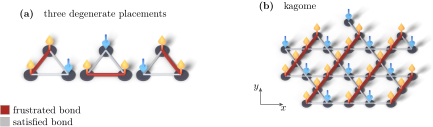

Advanced Quantum Materials 2027 · All lectures · Lecture notes
Session 8. Quantum Magnetism, Spinons and Kondo Physics
8.4 Frustration as the route to a quantum spin liquid
Before we build a macroscopic version of (8.3), we need to know when the ground state of a Heisenberg model stays time-reversal symmetric in this way, instead of ordering spontaneously as the magnets of Session 1 and Session 6 did. The general rule is frustration. The standard example is a triangular plaquette with antiferromagnetic coupling on all three bonds. Any two spins can point in opposite directions, but then the third spin is parallel to one of the two, so one of the two remaining bonds is not satisfied, and no spin configuration can satisfy all three bonds at the same time. This geometric frustration gives many classical ground states that are degenerate, which means that they have the same energy and different spin configurations. When we add quantum fluctuations, they mix these degenerate configurations into one quantum superposition, which in general does not break time-reversal symmetry.
This is the reason why the triangular and kagome lattices, which are both built only from triangles, are the standard place to look for quantum spin liquid physics. An antiferromagnetic Heisenberg model on either lattice is a real candidate for a QSL ground state, in the right range of couplings. This is also the reason why herbertsmithite, a compound with spin-\(1/2\) sites on a kagome lattice, is the best-known real candidate material. Figure 8.2 shows the geometry behind the whole argument, which is a frustrated triangle with its degenerate configurations and the kagome lattice that is built only from such triangles, while the plaquette without frustration and the single frustrated triangle are the ones of figure 6.3.
